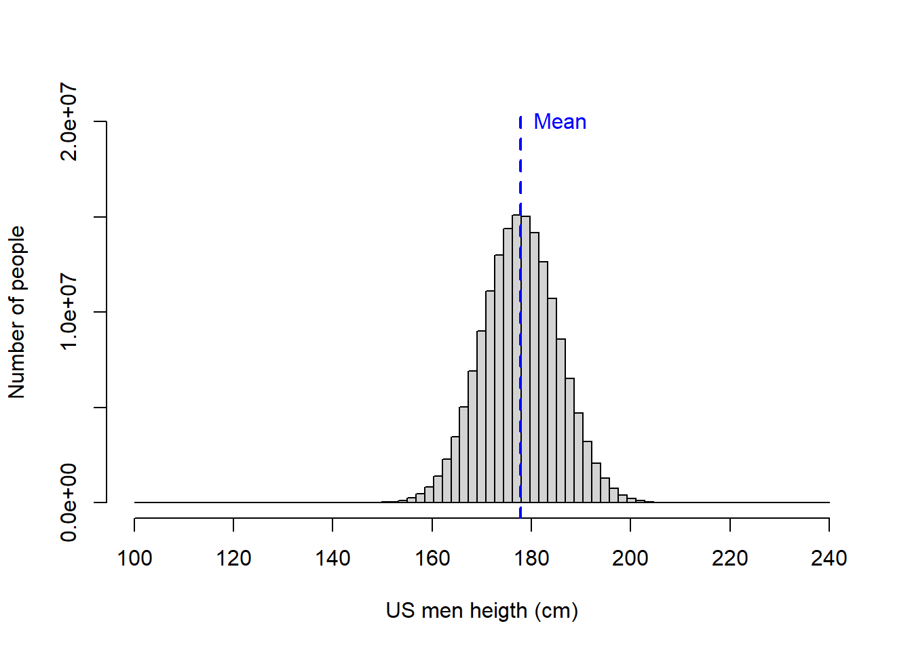

Background info
If the question is asked if something is different, how do we know that a thing is different? It is rare the case when two things are identical, so is everything different?. In statistic, we commonly use the term significantly different to indicate more precisely the level at which something is different. We will get to this in a moment.
When the question is formulated of whether something is significantly different; inherently we assume a couple things:
- There is a reference point to which we are comparing to. That reference is most commonly, almost always, a metric we obtained from the population. So it is compared to the data from the population that will know if something is different.
Figure 8.2: Population, sample, individual
- The second thing implied is that there is a threshold beyond which we will assume something is different. Who determines the level at which something is different?. That will be the so-call level of significance, which at times will appear named as alpha, \(\alpha\).
As mentioned earlier, in biology and most sciences, we generally accept an \(\alpha\) smaller than 0.05. Basically, we assume something is significantly different, if it is larger or smaller than the top or bottom 5% of all individuals in that population.
Figure 8.3: How p<0.05 feels like
Of course, you can use different levels of significance, and it all cases it means the same: the threshold beyond which you assume something is different.
The particular value in a distribution where the given \(\alpha\) occurs is call the critical value. Say you want to test a hypothesis that a given rabbit is significantly larger than the common rabbit and you want to test this hypothesis with a level of significance of 0.1. In this case, you need to know the size at which 10% of the common rabbit occurs.
In the example below, 10% of the rabbits are larger than 7in. In this case, the critical value for a level of significance of 0.1 is 7in.
It is called critical value, because that is the cut off that will determine if your sample is significantly different or not.
In the example below, the rabbit I want to compare is 6.8in tall, so at a significance level=0.01, this rabbit is not significantly large.
Figure 8.4: Critical value
By the way, 1 - \(\alpha\) is what is call level of confidence. Think about it, if I conclude that something is significantly different at \(\alpha\)=0.05, then my confidence has to be the complement of that, which will be 0.95 or 95%.
Let’s put together the data on the population and the level of significance for you to better know how then we make a call on whether something is different.
p-value and alpha
Early on, we studied how a population can be characterized based on the mean value of its individuals and the variability of those individuals, the so-call standard deviation. With those two parameters alone you can know how the entire population looks like.
Lets look at an example. In the USA, the average men is 177.8cm in height with an standard deviation of 7.62cm. Lets plot this population.
Mean_Height=177.8 # height of average male in the USA
SD_Heigh=7.62 # Standard deviation of male population in the USA
MenUSPop<- rnorm(164000000,Mean_Height,SD_Heigh) #we select from a population with that mean and SD, the 164 million men in the use. This will be the entire population....this line may take a while, dependenting how good your computer is...you are taking over 160 million values...you can click scape if it take to long and use rather take a still large sample of 1.6 million men, for contnuing with the execersize.
breaks = seq(100, 240, length.out = 80) #I create a set of bins for the x-axis of the distribution
#next I plot the data for the size of the entire population of men in the USA
hist(MenUSPop, main=NA,xlim=c(100, 240),ylim=c(0, 20000000),breaks = breaks, xlab = "US men heigth (cm)",ylab = "Number of people")
#plot the mean height of men
abline(v=Mean_Height, lwd=2, col="blue", lty=2)
#lets add a label to mean label
text(Mean_Height,20000000,labels="Mean",pos=4, col="blue") 
From the figure above, you can see that while most men are on average 177.8 cm tall, some men can get very tall and others are very short. And just so you know, on the distribution above, the tallest men was \(225.48\) cm while the shortest was \(134.96\) cm.
One cool property of the population data, specially data that are normally distributed, is that you can tell relatively well the fraction of individuals away from the mean by knowing the standard deviation.
If you recall Chapter 5, we mentioned that 95% of the individuals on any normally distributed population are within two-standard deviations from the mean. Lets check that out.
In the figure below, I illustrate random samples of males taken from the US men height population. If I were to count the fraction of men two standard deviations below or above the mean height (percentage red numbers shown in the figure) on each sample, you would see that on any sample there are cumulatively almost always 5%, or about 2.5% on each tail of the distribution. Cool ah?
Figure 8.5: Fraction of population beyond 2SD l
And it gets even better, you can know very precisely, then the fraction of individuals in a population that are above or below a given standard deviation.
Let’s say I found a men that is 193.04cm tall. What fraction of men can be taller than him?
In this case, this guy is 2SD (Standard deviations) above the mean. The average height was \(177.8\) and one standard deviation, SD, was \(7.62\). So, \(177.8\) + (2 *\(7.62)\) = \(193.04\).
So you know that below the mean there are 50% of men, and two standard deviations above the mean are 47.5%. So 97.5% of the men are shorter than that guy. This guys is as tall as the tallest 2.5% of the men in th USA. If we assume a level of significance of 5%, then you can claim this one guy is significantly tall.
Figure 8.6: How do you like me?
This mathematic property of a normal population also works in reverse. Let’s say I found a men that is \(162.56\)cm tall?. What fraction can be shorter than him?
In this case, this guy is 2SD (Standard deviations) below the mean. The average height was \(177.8\) and one standard deviation, SD, was \(7.62\). So \(177.8\) - (2 *\(7.62)\) = \(162.56\).
We know that above the mean there are 50% of men, and two standard deviations below the mean are 47.5%. So 97.5% of the men are taller than that guy. This guy is as short as the shortest 2.5% of the men in th USA. If we assume a level of significance of 5%, then you can claim this one guy is significantly short.
In statistics, the fraction of individuals, members, data points, etc. that are above or below the given sample value in a population is called the p-value.
So in the example above, our conclusion that this one guy was significantly shorter has a p-value = 0.025 or 2.5%.
If we assume a level of significance, \(\alpha\), of 0.05, then we are assuming that something is significantly smaller or taller, if it is as short or as tall to the shortest or tallest 5% of the population.
In R, we can find out the critical value in a distribution of data at any given significance level using the \(qnorm\) function, which we used earlier. Worth nothing that this function assumes that the population is normally distributed. We will use this fucntion briefly.
In the example just above, the short guy was \(162.56\)cm tall, which was as short as the shortest 2.5% of the population. So this person is significantly small at an \(\alpha\) of 0.05. In fact, we can be more confident than that as our conclusion has a p-value of 0.025; We know that over 97.5% of the US population is taller than him.
Multiple academic discussions have taken place around the need to report the level of significance when the p-value is more accurate. At least now you know what they both mean.
From the example above, we can see that the overall approach to test if something is significantly different is relatively straightforward.
All you need to know is how many standard deviations from the mean a given individual or sample is. From this you can know the fraction of individuals that are above or below that given number (the p-value). You can then compare that p-value to the level of significance, \(\alpha\), you want to use. If the p-value is smaller than the level of significance then you conclude that the one thing is significantly different at the given \(\alpha\).
Lets finish this section by looking at the fraction of individuals in a population at increasing larger standard deviation. In short the fractions at each tail of a distributiona re very predictable if you know the standard deviation from a population.
Figure 8.7: Significance level